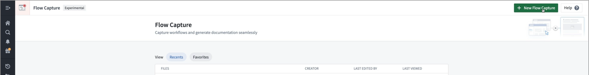

Record a workflow and edit resources
This page provides instructions on the configuration and steps required to record a workflow.
Create a flow capture resource
- Open the Flow Capture application.
- Select + New Flow Capture in the top right.

- Choose a file name and location to save your resource in Compass.
- Select Save to create the new flow capture resource.
Select a system prompt template
After saving your resource, you will be redirected to the Record workflow page. Under What are you looking to document?, choose the template that best matches the documentation you want to generate.
The following templates are currently available:
- General documentation: Capture a workflow and translate it into Markdown documentation.
- Report a bug: Reproduce an issue you found in the platform to provide rich detail for product partners.
- Request a feature: Point out a shortcoming of the platform and suggest an improvement.
- Provide feedback: Describe product behavior, functionality, or usability feedback while you use the platform.
You can change the selected template later if you need to adjust the generation prompt for a different use case.
:::callout{theme="warning"}
Before recording, ensure that you understand your organization's data handling policies. Flow Capture will record screenshots and optional audio; you must confirm that the content you record is appropriate for the intended use and is handled according to your security policies.
:::
Prepare to record
- Select Record workflow to open the recorder acknowledgement.
- In the acknowledgement dialog, select the checkbox to confirm the required security settings, and then select Acknowledge.
Review recorder controls and options
- Screenshot counter: Displays the number of captured screenshots in the top left of the recorder overlay.
- Record audio: Enable this toggle to capture audio that will be transcribed and associated with the recording.
- Auto-screenshot: When this toggle is enabled, the recorder will automatically capture a screenshot on click while you navigate the platform.
- Size dropdown: Choose the capture size for screenshots. This dropdown provides the following options to scale the recording frame:
- Full size: Capture at the full resolution of the target page.
- Scaled: Scale the page to fit the recorder viewport.
- Custom: Specify custom dimensions for the capture frame.
- URL field: Use this to navigate directly to the page you want to capture with the recorder. The URL field only accepts same-domain URLs. The page you navigate to must be on the same Foundry enrollment that Flow Capture is running on.
Start recording
- Enable Record audio if you want spoken narration and transcription.
- Enable or disable Auto-screenshot depending on whether you want screenshots captured automatically on click.
- Select Record to begin capturing your session.
Navigate while recording
Navigate to the pages you want to document by entering a URL in the recorder URL field, or by browsing in the recorder iframe. Interact with the application as you normally would to demonstrate the workflow you want to document.
Capture screenshots manually
If Auto-screenshot is enabled, screenshots will be taken automatically for every click event, but you may take manual screenshots at any time. Use the Take screenshot option in the recorder controls to capture the current view, or use the keyboard shortcut Cmd+Shift+S (macOS) or Ctrl+Shift+S (Windows) to capture a screenshot.
Use recording controls during the session
- Select Pause to pause the capture.
- Select Record to resume after pausing.
- Select Discard and exit to cancel the session and remove any captured media.
- When you have finished capturing the workflow, select Done.
After recording
You can open the flow capture resource in edit mode to review and edit screenshots, transcriptions, and the generated context before generating the final documentation. If recorded, your audio will be transcribed automatically and associated with the captured screenshots.
Edit resources
Use the edit controls on a flow capture to refine screenshots and transcriptions, and define which artifacts are included in the LLM generation context. Edits are staged until you save them.
Add content to LLM context
You can add a snapshot or a transcription to the generation context to make it available to the LLM during generation. To do so, hover over the asset you want to add and select Add to context.
You can also import images into Flow Capture by selecting Upload in the top right corner of the Assets page, and selecting the files you want to upload.
Crop images
Crop images to focus the reader's attention on relevant UI elements.
- Select the snapshot you want to edit.
- Select Crop image.
- Draw the crop region over the image by dragging the selection handles.
- Select Apply to accept the crop.
- When you have finished editing, select Save Edits, then select Done to return to edit mode.
Blur images
Blur sensitive information before you include screenshots in generated documentation or exports.
- Select the snapshot you want to edit.
- Select Blur Image.
- Draw a region to blur by dragging the selection handles.
- Select Apply to preview the blur.
- Select Save Edits, then select Done to return to edit mode.
Edit transcriptions
You can correct or improve transcriptions before generating documentation.
- Select the transcription text or the pencil icon to open the Edit transcription dialog.
- Edit the text in the Audio transcription field.
- To regenerate the transcription automatically, select Regenerate.
- Select Save and close the dialog to return to edit mode.
- Select Cancel to close the dialog without saving.
Delete or restore images and audio
You can remove images or audio files from a flow capture. Deleted items remain recoverable until you save your changes by selecting Save in the edit toolbar.
- Hover over the image or audio card to reveal the delete icon.
- Select the delete icon to mark the item as deleted.
- To restore a deleted item before saving your edits, select Restore snapshot.
- After selecting Save, deleted images and audio will be permanently removed.